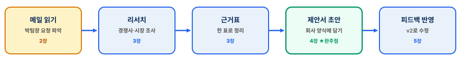
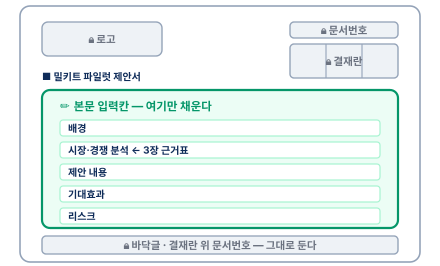
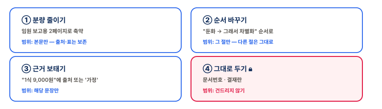
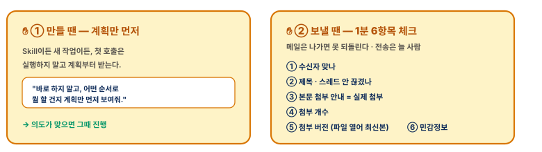

Claude Code
업무자동화 워크숍
받은 업무 메일 한 통을, 제안서로 완주하는 4시간
오늘은 이런 날입니다
여러분 업무 전체를 자동화하는 날이 아니라, 예제 한 건을 끝까지 완주하는 날.
메일→제안서까지
내 업무로
막혀도 괜찮습니다 — 각 단계에 플랜B와 따라가기 패킷이 있습니다. 완주가 품질보다 먼저.
한 흐름으로 다섯 단계

상세 프롬프트와 막힘 대응은 참가자 핸드북에 있습니다. 슬라이드는 길잡이입니다.
먼저, 완성본을 봅니다
3_완성_미리보기 폴더 — 오늘 만들 결과물의 기준선.
똑같이 만들 필요는 없습니다 — 이 정도 구조와 근거면 충분합니다.
환경 점검 — 4가지
사전 인증을 했다면 ①~③은 통과 상태입니다.
| # | 확인 | 성공 신호 |
|---|---|---|
| ① | 로그인 | 내 계정으로 들어와 있음 |
| ② | 유료 플랜 | 응답이 안 끊김(권장) |
| ③ | 폴더 열기 | 1_시작자료 열림 |
| ④ | (선택) Gmail | 안 돼도 무방 |
플랜B — Gmail 안 되면 메일 대신
.md파일 사용 · 폴더 안 열리면 미러링 + 따라가기 패킷.
핸즈온 1
메일 → 리서치 → 근거표 · 약 50분
지금 할 일
박팀장 메일에서 출발해 근거표 한 장까지 — 무엇·왜·언제로 가른 뒤 리서치해 정리합니다.
핸드북 3장을 펴고, '그대로 써도 되는 프롬프트'를 따라가세요. 막히면 손!
핸즈온 2 ★
근거표 → 제안서 초안 · 오늘의 완주점
지금 할 일
회사 제안서 양식 + 근거표 → 제안서 초안 1건.
- 핸드북 4장의 프롬프트로 시작 · 완벽한 최종본이 아니라 1차 초안이 목표

이 슬라이드가 끝날 때 전원 제안서 초안 보유 — 여기까지가 오늘의 핵심.
핸즈온 3
팀장 피드백 → 제안서 v2 · 약 30분
지금 할 일
피드백 메일을 반영해 v2로. 최소 1개만 반영해도 성공. 핸드북 5장 프롬프트 사용 · 끝에 변경점 목록.

한 걸음 더 — Skill
반복하는 일은 절차·프롬프트를 묶어 재사용할 수 있습니다. = Skill.
- 오늘은 만들지 않고 감만(강사 시연) · 핸드북 6장에 "내 업무 자동화 후보 1줄"

안전은 이 두 지점만 — 발송은 늘 사람이 합니다.
월요일에, 다시 써보세요
중요한 건 도구가 아니라 일하는 방식입니다. · Q&A